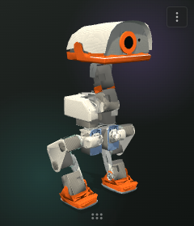
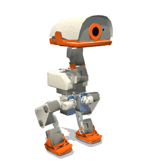
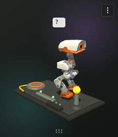
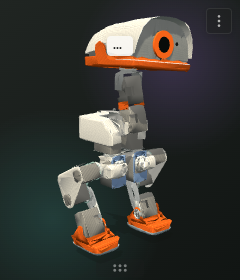

Lives with youDrag it anywhere and interact directly.

Microduck HabitatYour tiny mechanical desk companion
It watches, wanders, rests, remembers and explores its own little workbench — entirely offline on Windows, macOS and Linux.
Open source · Apache-2.0 · No account or telemetry
Try it here
Move your pointer around, click Microduck, or open the upper-right menu to request a rest and visit the workbench. This is the real model and behavior engine running in your browser; its memory stays in local storage.



Small window, real character
Energy, curiosity, trust and encounters shape what Microduck chooses to do next.
Transparent window, system tray, launch at login and a compact drag handle.
No network service, telemetry, camera, microphone or screen capture. It works offline.
A charge pad, balance rail and beacon turn calibration into autonomous exploration.
One habitat, three desktops
Native packages are produced and tested on each target platform.
Ready to meet Microduck?